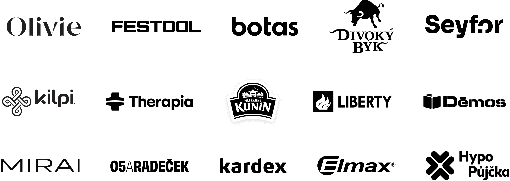

BRANDING
Silná značka = jsem první volba
Najdeme pozici vaší značky a stanovíme její hodnoty, misi a příběh tak, aby byla autentická a dobře zapamatovatelná. Silná značka totiž znamená: méně vysvětlování, vyšší důvěru a často i vyšší marži.
Jmenuji se Petr Mohyla a více než 25 let pomáhám firmám budovat značky a marketing, který má reálný dopad na obchodní výsledky. Propojuji strategii, kreativitu a realizaci, aby marketing opravdu fungoval.
Domluvte si nezávaznou konzultaciFirmy do marketingu investují čas i peníze — a přesto výsledky často neodpovídají očekávání. Většinou to není proto, že by byl marketing špatně vedený nebo že by v týmu chyběly talenty.
Problém bývá jinde: v mezerách mezi strategií, kreativním nápadem a jejich skutečnou realizací. Každá z těchto fází vyžaduje jiné myšlení, jiné nástroje a jiné zkušenosti. Pokud mezi nimi není silné propojení, výsledek se rozplyne dřív, než se dostane k zákazníkovi.
Marketing, který skutečně funguje, není jen o dobrém nápadu nebo dobré kampani. Je o schopnosti celý proces — od strategie přes kreativu až po realizaci — provést tak, aby se promítl do skutečných obchodních výsledků.
Utrácíte rozpočet, spouštíte kampaně, ale na obchodních číslech se to neprojevuje tak, jak jste čekali.
Zákazníci vás nerozpoznají od konkurence nebo neví, proč si vybrat právě vás.
Na různých místech říkáte různé věci. Chybí jednotný hlas, vizuální styl nebo příběh.
Změnili jste produkt, trh nebo cílovou skupinu — a marketing za tím nestíhá.
Silná značka = jsem první volba
Najdeme pozici vaší značky a stanovíme její hodnoty, misi a příběh tak, aby byla autentická a dobře zapamatovatelná. Silná značka totiž znamená: méně vysvětlování, vyšší důvěru a často i vyšší marži.
Znám zákazníka = mluvím jeho řečí
Identifikujeme cílového zákazníka. Najdeme jeho motivátory, obavy, bariéry, řeč tak, abychom k němu mluvili jeho jazykem a on naslouchal.
Dobrý nápad = bourám bariéry
Definujeme kreativní koncept pro vaši komunikaci. Sdělení zabalíme do kabátu značky a zakódujeme do řeči zákazníka tak, aby mu rozuměl a souzněl s ním.
Jsem vidět = zákazník mne slyší
Definujeme optimální kanály vaší komunikace tak, aby vaše značka byla zákazníkovi na očích na místech a v čase, kdy je to důležité.
Jsem konzistentní = dosahuji výsledků
Stanovíme road mapu vašich marketingových aktivit v čase. Stanovíme budget a princip jeho tvorby tak, aby vynaložené prostředky vedly k stanovenému cíli.
Znám = mám náskok
Předáme znalosti a zkušenosti do teamu. Individuálně i veřejně. Seznámí se s principy, postupy, nástroji a lidmi v marketingu.

Marketing znám z více stran. Nevidím jen strategii, nevidím jen kreativu — vidím celý řetězec a umím ho řídit tak, aby na sebe články navazovaly.
Pracoval jsem pro více než 100 značek v různých odvětvích — od FMCG přes B2B až po startupy. Každý projekt mi dal zkušenost, kterou přenáším do dalšího.
Vedle práce pro klienty mám zkušenosti i z vlastních projektů a podnikání. Vím, co znamená nést odpovědnost za výsledek — nejen za výstup.
Do projektů vstupuji tak, jako bych byl součástí vašeho týmu. Zajímám se o váš byznys, ne jen o zakázku. Chci, aby výsledky fungovaly — dlouhodobě.
Zákazníci budou vědět, kdo jste, co nabízíte a proč si vybrat právě vás. Jasná pozice zjednodušuje rozhodování zákazníka i vaši vlastní komunikaci.
Komunikace bude stavěná na skutečných potřebách, motivátorech a obavách vaší cílové skupiny — ne na tom, co si o zákazníkovi myslíte.
Nápady a kampaně, které nejen vypadají dobře, ale také vedou k akci — návštěvě, poptávce, nákupu.
Budete vědět, kam investovat, proč a co od toho čekat. Méně plýtvání, více efektu na správných místech.
První setkání je vždy o pochopení vašeho byznysu a příležitostí, které marketing může otevřít.
Domluvte si nezávaznou konzultaci